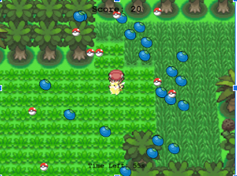
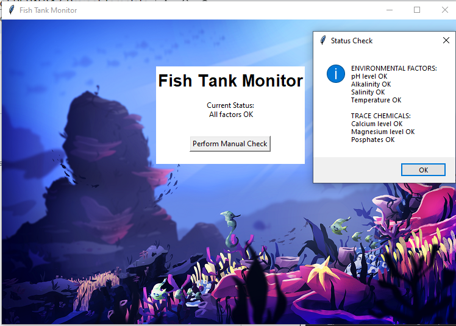
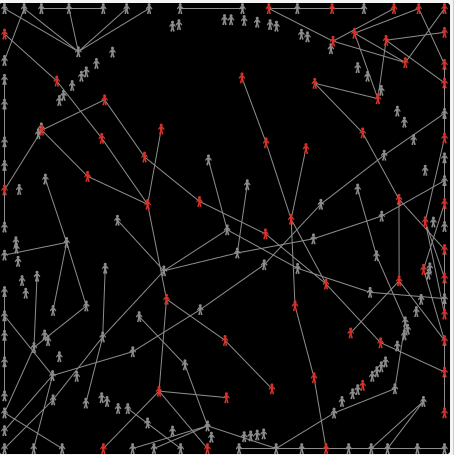

Home
Portfolio
About Me
This is my Portfolio Page!

1.1.9 -- Make Your Own Burger
For this project we made a program that draws a burger with varying ingredients based on user inputs.
The user is able to customize what they want on their burger such as lettuce, meat, sauce.
The program changes colors and draws different shapes based on what ingredients the user wants.
Pikachu's Berry Collector

For this project we made a program that has you move around turtles trying to catch other turtles without coming into contact into other turtles.
The user uses keyboard inputs in order to move around the Pikachu to collect berries and avoid the pokeballs.
Scratch Game: Baking a Cake
The user bakes a cake through instructions and dragging ingredients. The program uses animations, user input from the mouse, and changing backgrounds.
Fish Tank Project

We found errors in a fish tank program from weak authentication that resulted in phishing. Using VS Code and ciphers, we debugged and fixed the program to properly read chemical levels.
Spread of Disease Project

For this project we used NetLogo to analyze a simulation of how different types of diseases spread with multiple factors such as the amount of people, amount of connections and the behavior of the disease.